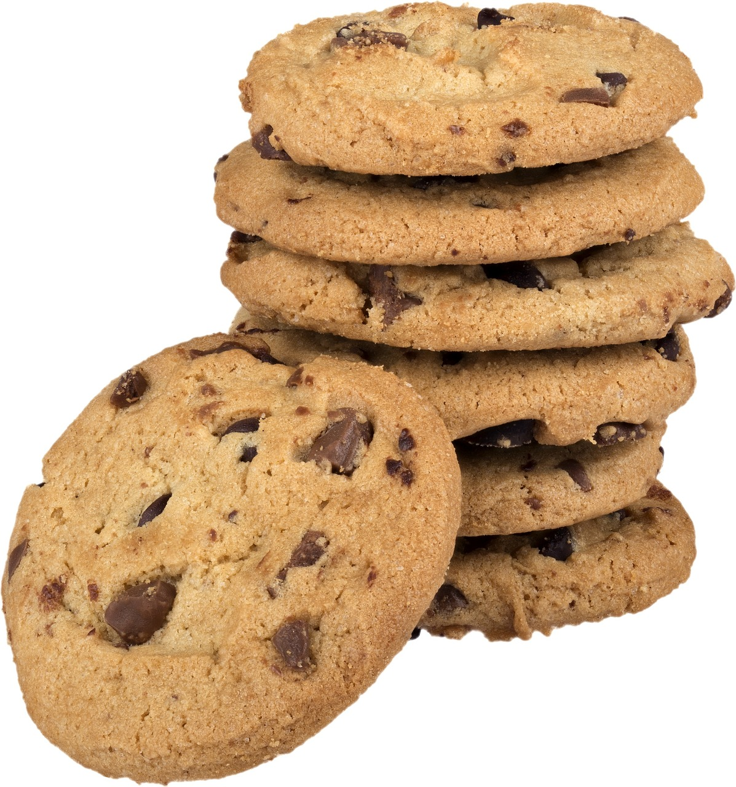

Nutella Cookies

Description
While not particularly healthy, sometimes you just need to treat yourself. Chewy cookies with smooth nutella that melts in your mouth is something that can turn any bad day into a good one.
It might take a little effort, but the process is simple, and the result will only make you craving more.
Ingredients
- 10 tbsp nutella
- 1.33 cups flour
- 0.66 cup brown sugar
- 120g unsalted butter
- 0.5 tbsp baking soda
- 1 tbsp honey
- 1 large egg
- 0.5 cup chocolate chips
- 1 tbsp vanilla extract
- 0.25 cup cooking salt
Steps
- Pour flour, a dash of salt, and baking soda into a bowl, mix well.
- Microwave the butter for 30 seconds so it's melty. Stir it a little until it's a melty fluid.
- Add sugar, vanilla, and honey to the butter, then mix. Add the egg and mix until it's thickened. Finally, add the flower mix and stir it all together.
- Cover the bowl with cling wrap, then refrigerate for 1.5 hours.
- Meanwhile, line a tray with baking paper, then add dollops of nutella 8mm~ thick.
- Freeze the dollops for an hour until they're firm.
- Once the dough is ready, roll it into a log that can be cut into 10 equal discs.
- Flatten the discs to be 5mm~ thin, then place a nutella disc within it upside down.
- Flip the cookie over, bundling up the bottom to cover the nutella disc.
- Shape the cookie into a 1.5cm thick round, then top with chocolate chips, be generous.
- Repeat this for all ten cookies, before placing them all on a paper lined tray to cook for 12 minutes at 180°C, 8cm apart.
- Let the cookies cool for 10 minutes in the tray, before removing to cool for 5 more minutes.
Home